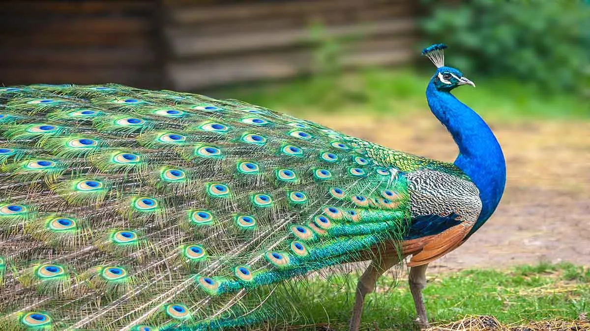
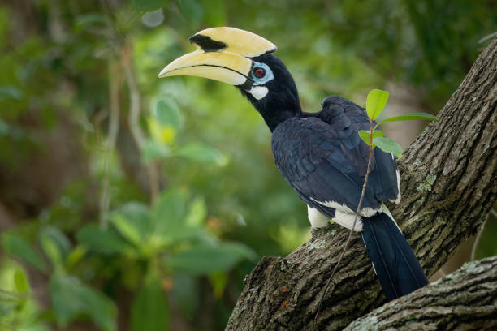
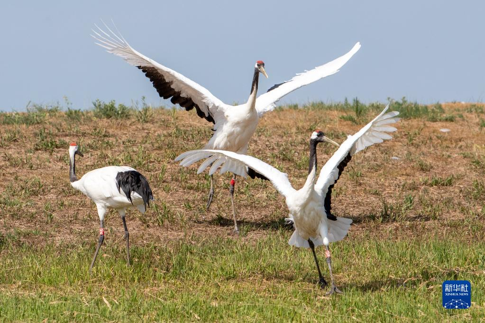
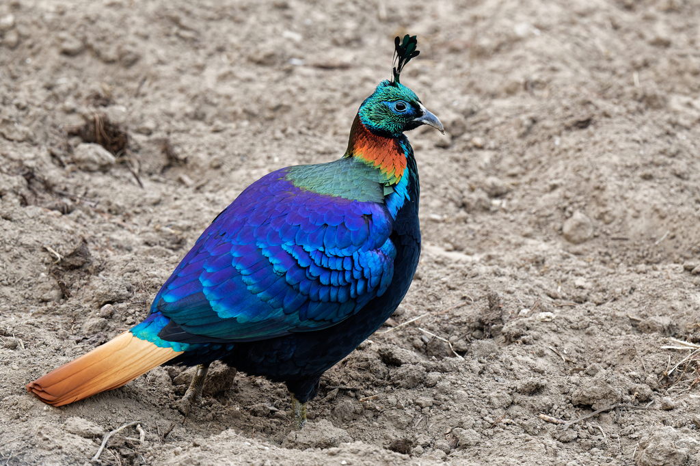
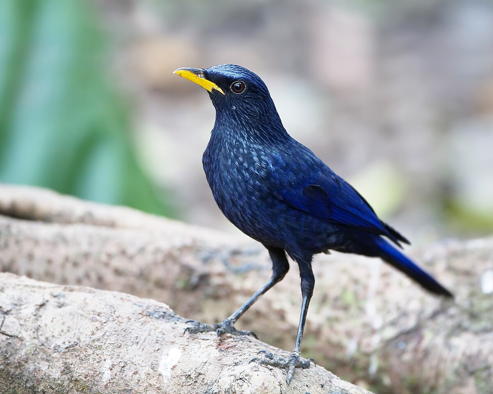

Азия
|  | Индийски паун | |
| Видът е широко разпространен в Пакистан, Индия и Шри Ланка на надморска височина до 2000 m. Ареалът му на местообитание обхваща районите южно и източно от река Инд, в Джаму и Кашмир, източен Асам, южен Мизорам и целия Индийски полуостров. Обитава както джунгли и горски местности, така и обработваеми земи в близост до селищата. Макар че е пренесен доста рано в Средиземноморието, широко разпространение в Европа намира едва след походите на Александър Велики в Индия. Одомашняването му е спомогнало видът да се разпространи във всички части на света. | ||
{kind=link}
| Ориенталски рогач |  | |
| Ориенталският рогач, известен също като Бялоклюн рогач, е вид птица от семейство Рогачови, характерен за тропическите гори на Южна и Югоизточна Азия. Ориенталският рогач е важен за разпространението на семената на тропическите дървета, особено на смокините. Роговият израстък ("каската") на рогачите не служи за защита, а се смята, че играе роля в усилването на техния глас или като символ на статус. | ||
{kind=link}
|  | Японски жерав | |
| В Китай жеравът, известен още като чапла и винаги е бил един от най-благоприятните символи от древни времена. Той е символ на благородство и дълъг живот. В допълнение, също представлява вечна любов и лоялност в романтиката. По време на периода на императорската династия върху официалните одежди се използват изображения на жерави, за да се посочи техния ранг.В японската култура жеравът, известен още като „птицата на щастието“ е символ на дълголетие, вярност, мир и също се смята, че има лечебна сила. Японците вярвали, че сгъването на хиляда хартиени жерави за пациент, страдащ от заболяване, може да помогне за възстановяването му. В допълнение, жеравът е и един от най-популярните обекти за късмет в Япония, за който се твърди, че носи късмет на собственика. | ||
{kind=link}
| Хималайски монал |  | |
| Птицата е относително голяма на фона на останалите представители на семейство Фазанови. Дълга е около 70 cm, теглото на мъжките и женските варира съответно в диапазоните 1980 - 2380 g и 1800 - 2150 g. Възрастните мъжки имат дълъг гребен и по цялото тяло имат разноцветно оперение, докато оперението на женските е еднообразно, в горната част на торса в тъмно кафяво до черно. Гребенът при мъжките е дълъг и металически зелен, перата на гърба и от двете страни на врата им е в различни нюанси на медночервеното, долната част на тялото им е в отчетливо бяло, което се вижда при полет. Перата на опашката на мъжкия са равномерно червеникави, като потъмняват към краищата, докато перата в основата на опашката на женската са бели с черни и червеникави ивици. Женските имат ярко бяло петно на гушката и бяла ивица на опашката. През първата си година, още незрели, мъжките наподобяват външно на женските, но са по-големи на размери и с по-слабо отличително оперение. | ||
{kind=link}
|  | Синя свирчовка | |
| Синята свирчовка, известна също като Голям син дрозд, е красива пойна птица от семейство Мухоловкови.Дължина около 33 см – сравнително голяма птица за семейството. Синята свирчовка често е вдъхновение за поети и художници в Азия, заради ярките си цветове и мелодична песен. | ||
{kind=link}